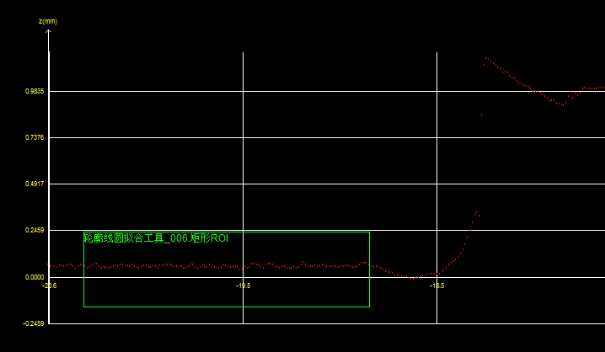
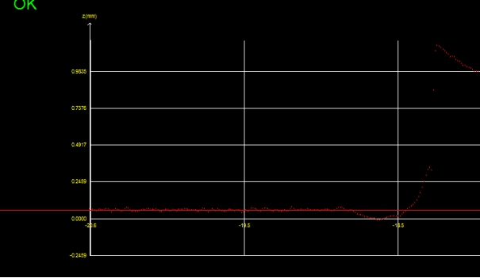

在3D测量中，往往需要对检测区域内的轮廓数据进行直线拟合或者圆拟合，获取最佳拟合直线或者最佳拟合圆的参数。图1所示为轮廓线圆拟合工具的示意图。
 
| 分类 | 参数名称 | 参数描述 |
|---|---|---|
| 属性窗口 | ROI类型 | 待检测区域，分为5种：整幅图像、矩形、仿射矩形、多仿射矩形、圆形。 |
| 仿射矩形ROI个数 | 仅在ROI类型为多仿射矩形时有效，用于指定仿射矩形的个数，取值范围[2,10]。 | |
| 拟合类型 | 分为2种：直线拟合和圆拟合。 | |
| 拟合方法 | 分为2种：效率最优和全局最优。 |
|
| 启用局外点 | 选择“是”，则启用局外点，并显示局外点比例参数。 | |
| 局外点比例 | 局外点就是偏离曲线较远的点。局外点比例即不参与直线拟合或圆拟合的点的比例，取值范围[0,1]。 | |
| 图像窗口 | 轮廓图像 | 显示待检测的轮廓图像。 |
| 检测区域 | 显示待检测区域。 | |
| 数据链 | 输入轮廓数据 | 输入待检测的轮廓图像的轮廓数据，该参数来源于截面生成工具的输出轮廓数据参数。 |
| 高级界面 | 无 | 无 |
| 分类 | 参数名称 | 参数描述 |
|---|---|---|
| 监视窗口 | 输入轮廓数据 | 输入待检测的轮廓图像的轮廓数据，包括轮廓点数，有效点数。 |
| 直线 | 直线拟合结果，包含拟合直线的位置坐标、方向向量、旋转角度等信息。 | |
| 直线集 | 每一个ROI的直线拟合结果的集合。该参数主要用于轮廓面积工具的基准线参数。 | |
| 圆 | 圆拟合结果，包含拟合圆的圆心、半径等信息。 | |
| RMS误差 | 直线或圆拟合结果的RMS误差。 | |
| 执行结果 | 工具执行结果。 | |
| 执行时间 | 工具执行时间。 | |
| 图像窗口 | 轮廓图像 | 显示待检测的轮廓图像。 |
| 直线/圆 | 显示直线或圆的拟合结果。 | |
| 数据链 | 同监视窗口参数，供后续工具使用。 |
Step 1设置拟合类型和检测区域
对于轮廓线圆拟合工具，首先应根据需要设置拟合的类型和检测区域。其中，拟合类型有2种：直线拟合和圆拟合，检测区域有5种：整幅图像、矩形，仿射矩形，多仿射矩形，圆形。
Step 2 设置拟合方法和参数
完成拟合类型和检测区域的设置后，需要对拟合的方法和参数进行设置。这部分主要是根据实际需求，对局外点的模式，局外点的比例以及拟合方法进行设置。其中，对于直线拟合、圆拟合的各种拟合方法的性能及应用场合总结如下表所示。
| 拟合方法 | 精度 | 效率 | 应用场合 | |
|---|---|---|---|---|
| 直线拟合 | 不考虑局外点的效率最优/全局最优 | 低 | 高 | 要求效率高的场景 |
| 考虑局外点的效率最优 | 较高 | 较高 | 要求精度和效率比较高的场景 | |
| 考虑局外点的全局最优 | 高 | 低 | 要求精度高的场景（ROI中轮廓点数量不应超过440） | |
| 圆拟合 | 不考虑局外点的效率最优 | 低 | 高 | 要求效率高的场景 |
| 不考虑局外点的全局最优 | 较高 | 较低 | 要求精度较高的场景 | |
| 考虑局外点的效率最优 | 较高 | 较高 | 要求精度和效率比较高的场景 | |
| 考虑局外点的全局最优 | 高 | 低 | 要求精度高的场景（ROI中轮廓点数量不应超过135） |
Step 3 执行拟合和输出结果
在上述步骤之后，就可以执行拟合了。对于圆拟合，输出的结果包括：拟合圆的圆心、半径和拟合的均方差；对于直线拟合，输出的结果包括：拟合直线的位置坐标、方向向量、旋转角度和拟合的均方差。
无
参见“\Samples\3D\深度图\3D测量工具.gvp”。